4．希尔伯特空间的公理化
函数空间和算子理论，在1920年代似乎正在朝着只是为抽象而抽象的方向前进。甚至巴拿赫也没有运用过他的工作。这种情况引起外尔评论道：“从1923年开始……希尔伯特空间的谱理论被发现是量子力学的合用的数学工具，但这并不是功绩而是一种幸运。”量子力学的研究表明，一个物理系统的可观测对象可以用希尔伯特空间中的线性对称算子表示，而且表示能量的特殊算子的特征值和特征向量（特征函数），正是原子中一个电子的能级，并对应于这系统的稳定量子状态。两个特征值之差给出放射光量子的频率，从而确定物质的辐射谱。1926年薛定谔（Erwin Schrödinger）提出了他的基于微分方程的量子理论。他还证明了这理论和海森伯（Werner Heisenberg）的无穷矩阵理论（1925年）是一致的，后者曾被应用到量子论上。但把希尔伯特的工作和微分方程特征函数论统一起来的普遍理论还是缺门。
算子在量子理论中的应用，刺激了希尔伯特空间和算子的抽象理论的研究。这首先是由冯·诺伊曼（John von Neumann，1903—1957）在1927年着手进行的。他的方法是同时处理平方可和序列空间和定义在某公共区间上的L2函数空间。
在两篇文章中(26)，冯·诺伊曼提出了希尔伯特空间以及希尔伯特空间中的算子的公理方法。虽然冯·诺伊曼公理的来源可以从维纳、外尔和巴拿赫的工作中看到，但冯·诺伊曼的工作更完全、更有影响。他的主要目标是对很大一类所谓埃尔米特算子阐述普遍的特征值理论。
他引入了定义在复平面的任一可测集E上的可测的、平方可积的复值函数所构成的空间L2。他还引入了类似的复序列空间，也就是，全体复数列
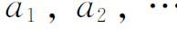
所成的集合，它们具有性质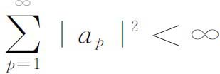
。里斯-费希尔定理表明，在函数空间的p＝1函数同序列空间的序列之间，存在一个一一对应如下：在函数空间中选取一个完全的标准正交函数系 ，如果f是函数空间的一个元素，那么f关于
，如果f是函数空间的一个元素，那么f关于 的展开式的傅里叶系数就是序列空间的一个序列；反过来，对于一个这样的序列，L2空间中存在唯一的（允许差一个积分为0的函数）一个函数，它以这个序列作为它关于
的展开式的傅里叶系数就是序列空间的一个序列；反过来，对于一个这样的序列，L2空间中存在唯一的（允许差一个积分为0的函数）一个函数，它以这个序列作为它关于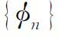
的傅里叶系数。进一步，如果定义函数空间中内积（f，g）为
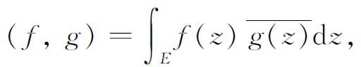
其中
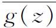
是g（z）的复共轭，而在序列空间中，序列a和b的内积定义为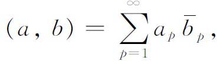
那么，在f对应于a而g对应于b时，有
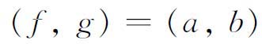
。这些空间中的一个埃尔米特算子R定义为一个线性算子，具有这样的性质：对它定义域中的所有f与g，都有
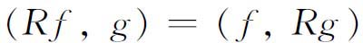
。类似地，在序列空间中，有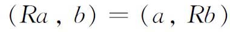
。冯·诺伊曼的理论同时对函数空间和序列空间规定了公理方法。他提出了下列的公理基础：
（A）H是一个线性向量空间。即在H上定义了加法和数乘，使得如果f1和f2是H的元素，a1和a2是任意复数，则
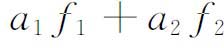
也是H的元素。（B）在H上存在一个内积，即任两向量f与g的一个复值函数，用（f，g）表示，具有性质：（a）
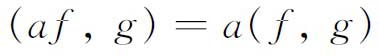
；（b）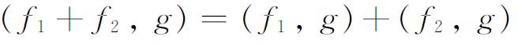
；（c）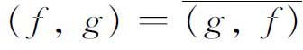
；（d）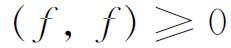
；（e）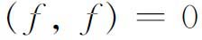
当且仅当f＝0。若（f，g）＝0，则称f与g正交。f的范数就是
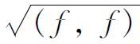
，用‖f‖表示。量‖f－g‖定义了空间的一个度量。（C）对刚才定义的度量来说H是可分的，即相对于度量‖f－g‖，在H中存在一个可数的稠密集。
（D）对每一个正整数n，H内存在n个线性无关的元素。
（E）H是完备的。就是说，如果
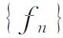
使得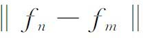
当m，n趋向∞时趋向于0，则在H中存在一个f使得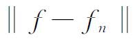
当n趋向无穷时趋向于0（这种收敛等价于强收敛）。从这些公理可推出一系列简单性质：施瓦茨不等式
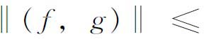
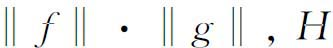
中的任一完全的标准正交集必是可数的，以及帕塞瓦尔不等式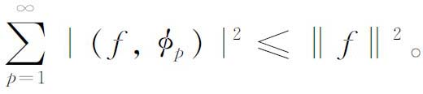
冯·诺伊曼接着研究了H的线性子空间和投影算子。若M和N是H的闭子空间，则M－N定义为M中所有与N的每一元素都正交的元素所构成的集合。投影定理如下：设M是H的一个闭子空间，则H的任一元素f可以分解成f＝g＋h，其中g属于M，h属于H－M，并且这种分解是唯一的。投影算子PM定义为PM（f）＝g；就是说，它是定义在整个H上的算子，它把元素f投影到f在M中的分量。
在他的第二篇文章中，冯·诺伊曼在H中引入了两种拓扑：强的和弱的。强拓扑就是通过范数定义的度量拓扑。弱拓扑我们不严格叙述，它是由相应于弱收敛的一组邻域系提供的。
冯·诺伊曼得到了许多关于希尔伯特空间中算子的结果。算子的线性是事先假定的，积分通常都了解为勒贝格-斯蒂尔切斯积分。线性有界变换或算子是指把一个希尔伯特空间的元素变成另一个希尔伯特空间的元素的变换，它满足线性条件（3）并且是有界的；所谓有界是说，存在一个数M，使得这空间中受算子R作用的所有f都有
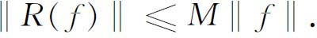
上述M的最小可能值称为R的模。这最后一个条件等价于算子的连续性。算子在一点连续连同算子的线性，充分保证了算子在所有点都连续，从而有界。
存在一个伴随算子R*，对于埃尔米特算子，R＝R*，并称R为自伴的。对于任何算子R，如果RR*＝R*R，就称R为正规的。如果RR*＝R*R＝I，其中I是恒等算子，那么R和正交变换类似，从而称为酉算子。对于酉算子R，有‖R（f）‖＝‖f‖。
冯·诺伊曼的另一个结果是，如果R在整个希尔伯特空间上是一个埃尔米特算子，并且满足弱闭条件，即只要fn趋向于f，R（fn）趋向于g，就有R（f）＝g，那么R是有界的。进一步，如果R是埃尔米特算子，那么对实轴上的某个区间（m，M）外的所有复的和实的λ，算子I－λR有逆算子存在，其中区间（m，M）是这样一个区间，当‖f‖＝1时，
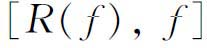
的值在此区间内。一个更加基本的结果是，对应于每一个线性有界的埃尔米特算子R，存在两个算子E－和E＋（Einzeltrans formationen），具有下列性质：（a）
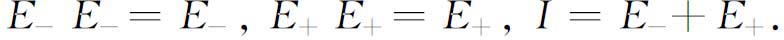
（b）E－和E＋是可交换的，并且与任何同R可交换的算子是可交换的。
（c）
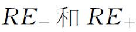
分别是负的与正的［所谓RE＋是正的是指RE＋（f）≥0对一切f成立］。（d）对于所有使
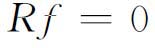
的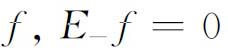
而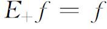
。冯·诺伊曼还建立了埃尔米特算子和酉算子之间的一个联系，这就是
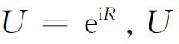
为酉算子，R为埃尔米特算子。冯·诺伊曼随后把他的理论推广到无界算子；虽然他的贡献以及其他人的这类结果是十分重要的，但是若对这些成果作叙述，就会使我们过分地深入到现代的发展。
泛函分析已经而且正在应用到广义矩量问题、统计力学、偏微分方程的存在唯一性定理以及不动点定理。泛函分析现在在变分法和连续紧群的表示论中都起着作用。它的内容还包含在代数、近似算法、拓扑和实变函数论中。尽管有这多种的应用，但用到解决经典分析的大问题上却少得可怜。这个失败使泛函分析奠基者们的希望落空了。
参考书目
Bernkopf，M．：“The Development of Function Spaces with Particular Reference to their Origins in Integral Equation Theory，”Archive for History of Exact Sciences，3，1966，1-96．
Bernkopf，M．：“A History of Infinite Matrices，”Archive for History of Exact Sciences，4，1968，308-358．
Bourbaki，N．：Eléments d'histoire des mathématiques，Hermann，1960，230-245．
Dresden，Arnold：“Some Recent Work in the Calculus of Variations，”Amer．Math．Soc．Bull．，32，1926，475-521．
Fréchet，M．：Notice sur les travauxs cienti fiques de M．Maurice Fréchet，Hermann，1933．
Hellinger，E．and O．Toeplitz：“Integralgleichungen und Gleichungen mit unendlichvielen Unbekannten，”Encyk．der Math．Wiss．，B．G．Teubner，1923-1927，Vol 2，PartⅢ，2nd half，1335-1597．
Hildebrandt，T．H．：“Linear Functional Transformations in General Spaces，”Amer．Math．Soc．Bull．，37，1931，185-212．
Lévy，Paul：“Jacques Hadamard，sa vie et sonœuvre，”L'Enseignement Mathématique，（2），13，1967，1-24．
McShane，E．J．：“Recent Developments in the Calculus of Variations，”Amer．Math．Soc．Semicentennial Publications，2，1938，69-97．
Neumann，John von：Collected Works，Pergamon Press，1961，Vol．2．
Sanger，Ralph G．：“Functions of Lines and the Calculus of Variations，”University of Chica go Contributions to the Calculus of Variations for 1931-1932，University of Chicago Press，1933，193-293．
Tonelli，L．：“The Calculus of Variations，”Amer．Math．Soc．Bull．，31，1925，163-172．
Volterra，Vito：Opere matematiche，5 vols．，Accademia Nazionale dei Lincei，1954-1962．
————————————————————
(1) Atti della Reale Accademia dei Lincei，（4），3，1887，97-105，141-146，153-158＝Opere matematiche，1，294-314，以及同期或以后年代的其他论文。
(2) Bull．Soc．Math．de France，30，1902，40-43＝Œuvres，1，401-404．
(3) Werke，p．30．
(4) Memorie della Reale Accademia dei Lincei，（3），18，1883，521-586．
(5) Atti della Accad．dei Lincei，Rendiconti，（4），5，1889，342-348．
(6) Verhandlungen des ersten internationalen Mathematiker-Kongresses，Teubner，1898，201-202．
(7) Verhandlungen，204-205．
(8) Comp．Rend．，136，1903，351-354＝Œuvres，1，405-408．
(9) Rendiconti del Circolo Matematico di Palermo，22，1906，1-74．
(10) Annali di Mat．，（3），13，1899，1-122．
(11) 下极限lim inf是指序列
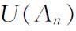
的最小极限点。(12) Amer．Math．Soc．Trans．，15，1914，135-161．
(13) Amer．Jour．of Math．，35，1913，369-394．
(14) Amer．Math．Soc．Trans．，21，1920，357-383．
(15) 例如，看Atti del IV Congresso Internazionale dei Matematici（1908），2，Reale Accademia dei Lincei，1909，98-114，以及Amer．Math．Soc．Bull．，18，1911／1912，334-362。
(16) Rendiconti del Circolo Matematico di Palermo，25，1908，53-77．
(17) Nouvelles Annales de Mathématiques，8，1908，97-116，289-317．
(18) Comp．Rend．，444，1907，1414-1416．
(19) Amer．Math．Soc．Trans．，8，1907，433-446．
(20) Comp．Rend．，136，1903，351-354＝Œuvres，1，405-408．
(21) Comp．Rend．，149，1909，974-977，和Ann．de l'Ecole Norm．Sup．，28，1911，33 ff．
(22) Acta Math．，41，1918，71-98．
(23) Fundamenta Mathematicae，3，1922，133-181．
(24) Studia Mathematica，1，1929，211-216．
(25) Jour．für Math．，157，1927，214-229．
(26) Math．Ann．，102，1929／1930，49-131，和370-427＝Coll．Works，2，3-143．